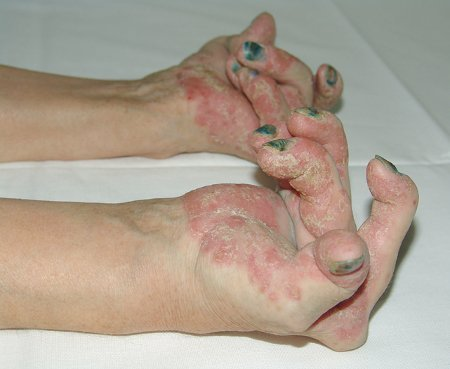
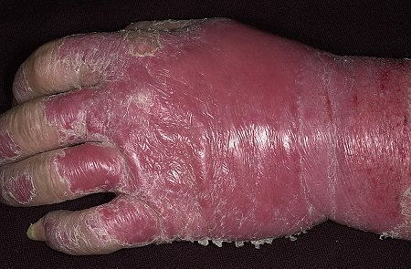
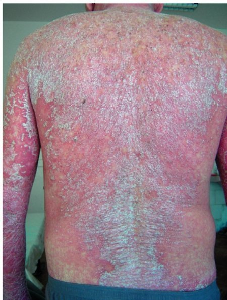

A szerkesztőktől: A járványügyi kutatások és statisztikák szerint a pikkelysömör az egyik leggyakoribb bőrbetegség. Világszerte, mintegy 250 millió ember szenved ebben a betegségben. Ez a szám hazánkban eléri az 1 milliót is. A pikkelysömör egy súlyos és életveszélyes autoimmun betegség. A kialakult helyzetről, és Magyarország lakosainak kezeléséről beszélgettünk a bőrgyógyászat egyik szakavatott orvosával, a bőrbetegségekre szakosodott Humán Bőrgyógyászati Klinika ügyvezető igazgatójával.
Üdvözöljük, kedves Gyula. Az első kérdésem az volna, hogy a pikkelysömör valóban annyira veszélyes-e, mint állítják?
Korábban írtam egy "A pikkelysömör elleni küzdelem" című tanulmányt, így akár holnapig is tudnék beszélni a betegség veszélyeiről, de megpróbálok rövid lenni. Jelenleg, a pikkelysömör valóban az egyik legveszélyesebb bőrbetegség. A külső megjelenésünk eltorzítása mellett rengeteg komplikációval járhat. A betegség akár 20-30%-al rövidítheti meg egy ember élettartamát. Ez azt jelenti, hogy a pikkelysömörben szenvedő betegek 15-20 évvel kevesebbet élnek.
A pikkelysömör gyakran egy másik betegséggel is együtt jár. Ezt az állapotot kísérő betegségnek nevezzük. A pikkelysömörben szenvedő betegnek kétszer, vagy akár háromszor nagyobb esélyük van az érelmeszesedés, a szív- és érrendszeri megbetegedések, az agyvérzés, magas vérnyomás, kóros vérzsír szint, cukorbetegség, vagy Crohn-betegség kialakulására.
Hogy jobban megértsük, íme néhány fotó az alapítványtól:
Egy 26 éves nő kézízületeinek visszafordíthatatlan deformációja (a pikkelysömör okozta ízületi gyulladás tünete)

Pikkelysömör és bőrgyulladás egyvelege egy 35 éves férfi kézfején:

Egy 27 éves férfi, aki túl későn keresett fel bennünket (azóta már elhunyt):

Mit tesznek Magyarországon a pikkelysömörben szenvedő betegekért?
Őszintén szólva, komoly hiányosságok vannak az összehangolt munkában, hiszen a pikkelysömör kezelését csak néhány egészségügyi központokban dolgozó orvos látja el. A legtöbb kórház nem rendelkezik kutatási programmal, így a pikkelysömört csak hagyományos módon tudják kezelni, ami nem mindig hatékony.
Az Emberi Bőr Alapítvány klinikája és én azért vagyunk, hogy segítsünk a betegeinken. A korlátozott erőforrásaink ellenére is minden tőlünk telhetőt megteszünk a betegség kezeléséért országszerte. Nemrég aláírtunk egy egyezményt, amivel csatlakoztunk egy "Pikkelysömör ellenes" nemzetközi programba. Ezzel számunkra is elérhetővé vált az első, program keretein belül kifejlesztett gyógyszer - a " against psoriasis". Jelenleg ez az egyetlen hatékony orvosság a pikkelysömör kezelésére.
A termék tényleg átesett a megfelelő vizsgálatokon? Mi bizonyítja a hatékonyságát?
A " against psoriasis" az esetek 93%-ban eltávolította a pikkelysömört és meggyógyította a bőrt. Valamint segít az immunrendszernek megszüntetni a betegség kialakulásának okát. A krém képes nem túl előrehaladott állapotú betegség esetében megszüntetni a viszketést és az irritációt, táplálja, puhává teszi a bőrt és megakadályozza a betegség továbbterjedését.
Jelenleg, az egész világpiacon nincs ennél hatékonyabb orvosság a pikkelysömör ellen. Az egyetlen másik lehetőség a speciális magánkórházak átfogó fekvőbeteges kezelése. Sajnos az ilyen kezelések ára megfizethetetlen a legtöbb ember számára. A " against psoriasis" 40-50-szer olcsóbb, de a hatékonysága megegyező a nem túl súlyos eseteknél.
Azt hiszem, a legtöbb olvasónk nagyon kíváncsi, hogy hol is lehet megvásárolni a " against psoriasis"-t.
A hatékonysága miatt a termék jelenleg nagyon kelendő. Korábban nem volt elérhető hazánkban, mert csak olyan országokban árulták, ami részt vett a "Pikkelysömör ellenes" programban. A csatlakozásunk után megindult a termék szállítása Magyarországra.
Bárki azonnal megrendelheti és megvásárolhatja a krémet az egyéni használat céljából. A szállítást egy futárszolgálat teljesíti (a fizetés utánvéttel történik). A krém alkalmazása nem igényel további beavatkozást, ezért a terméket bárki használhatja.
Gyula, nagyon köszönjük a beszélgetést. Szeretne még mondani valamit az olvasóinknak zárásképpen?
Csak annyit szeretnék mondani, hogy minden embernek muszáj többet törődni az egészségével. A pikkelysömör nagyon veszélyes betegség, ezért fontos a kezelés mielőbbi megkezdése, mielőtt túl késő lesz. Csak képzeljék el, hogy MOST MÁR KÉPESEK VAGYUNK A PIKKELYSÖMÖR KEZELÉSÉRE! Nem volna nagy kár kihagyni egy ilyen lehetőséget?
Ui.: Dr. Illés Gyula speciális akciót ajánlott fel a weboldalunkon keresztül, amelynek keretein belül a " against psoriasis" 50%-os kedvezménnyel megrendelhető!
Az interjút Pintér Roland készítette.